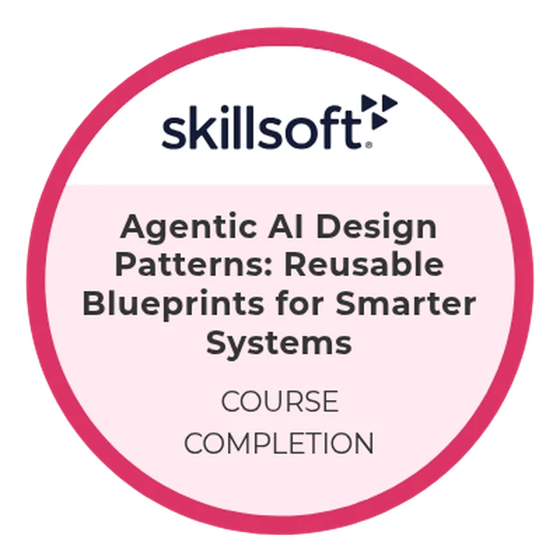

AGENTIC AI
CREDENTIAL INTELLIGENCE
Search 92 completion records, filter by capability area, or choose a role to prioritize the strongest signals.
FEATURED MASTERY BADGES
The original course badge remains visible inside a custom diamond or shield chassis. Styling supports comprehension; it does not alter the credential.
AGENTIC AI

AI EVALUATION

AI SECURITY

AGENT BUILDING

ARCHITECTURE

DESIGN PATTERNS
IT AUTOMATION
GENERATIVE AI
SEARCHABLE INVENTORY
Search exact technologies, filter by category, or prioritize credentials for a target role.
EVIDENCE FILES
Skillsoft certificate evidence.
PDFSkillsoft certificate evidence.
PDFSkillsoft certificate evidence.
39 pagesCandidate-supplied completion record export.
Evidence note: The wallet states that some records were uploaded by the recipient and may not be automatically verified by the platform. Completion records are not represented as licenses, degrees, or professional certifications.